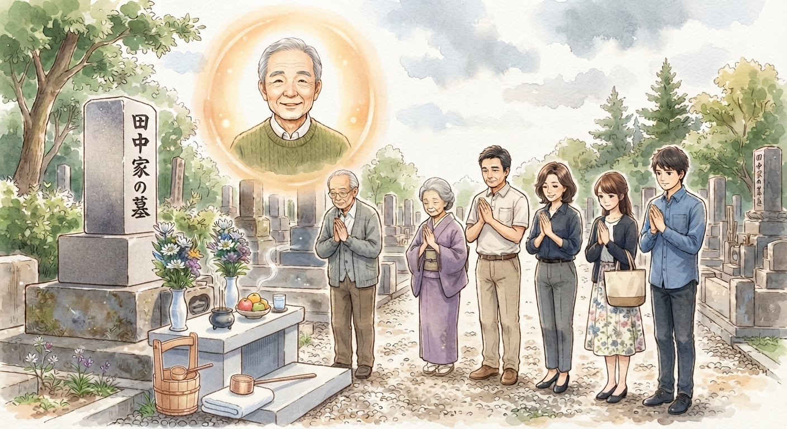

New Words
お盆休み — Obon holiday / Obon break
ご先祖様 — ancestors (family members who died)
帰ってきます — come back / return home
実家 — parents' home / family home
お墓 — grave
お墓参り — visiting a grave
墓花 — flowers for a grave
親切 — kind
菊 — chrysanthemum
百合 — lily
掃除します — clean
8月です。
日本では、お盆休みがあります。
お盆には、ご先祖様が家に帰ってきます。
田中さんは、お盆休みに実家に新幹線で帰りました。
今日は、お墓参りをします。
お墓参りの前に、墓花を買いに花屋さんに行きました。
おじいちゃんは百合の花が好きでした。
だから、白い百合と菊の花を選びました。
花屋さんはとても親切でした。
花はとても綺麗で、うれしかったです。
それから、家族と一緒にお墓に行きました。
お墓を掃除して、ご先祖様にあいさつをしました。
そのあと、家に帰って、みんなでスイカを食べました。
家族との時間は、とても楽しかったです。
Obon Holiday
It is August.
In Japan, there is an Obon holiday.
During Obon, ancestors return home.
Ms. Tanaka returned to her family home by bullet train for the Obon holiday.
Today, she is going to visit her family grave.
Before visiting the grave, she went to a flower shop to buy flowers for the grave.
Her grandfather liked lilies.
So, she chose white lilies and chrysanthemums.
The florist was very kind.
The flowers were very beautiful, and she was happy.
Then, she went to the grave with her family.
They cleaned the grave and greeted their ancestors.
After that, they went home and ate watermelon together.
She had a very enjoyable time with her family.